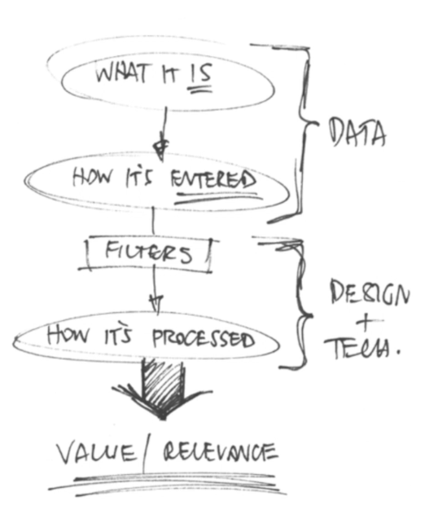
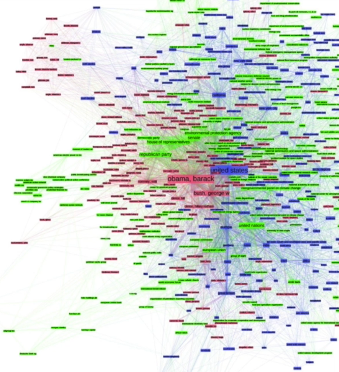
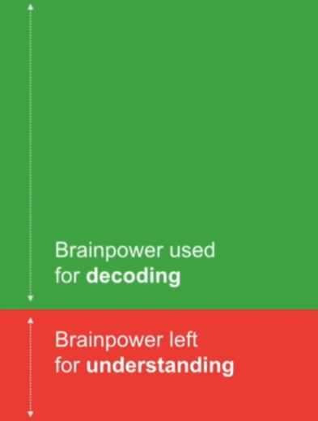

Jump to a section
44 · Five Rules for Great Data Design
Refined 15 October 2026 from the supplied Joe Natoli course notes. Original wording and captures remain preserved.
Core principle
Design data for the user’s context and decisions. Reduce irrelevant decoding work while keeping needed evidence available.
Application to game tools
Summarize affected, skipped and blocked items, with exact records and units available for inspection.
Assessment and qualification
“Usefulness always decreases with volume” is not universal; experts may need large structured tables. Missing, zero, untested and failed are different states.
Try it
Which data points let this artist choose the next action?
Source: 44 Five Rules for Great Data Design.md
Study detail and teaching translation
The source’s recurring criteria center on useful information, the user’s context, meaningful presentation and avoiding unnecessary decoding. Apply them together rather than optimizing appearance alone.
Distinguish the essential summary from detail that should remain inspectable. The right amount of information depends on the user and decision.
Teaching adaptation: show affected, skipped and blocked counts with a route to each record. Keep units and definitions explicit; zero, missing, untested and failed are different meanings.
Original captures


